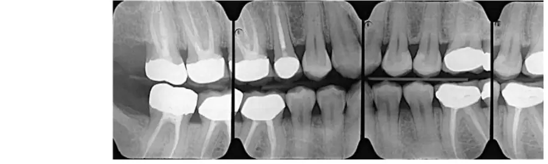
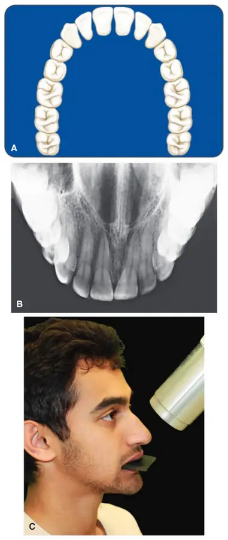

نسخه استخراجشده؛ ترجمه یا تأیید علمی انجام نشده است. وضعیت: captured
رادیوگرافی اکلوزال یک بخش نسبتاً بزرگ از قوس دندانی را نشان میدهد — «میتواند کام یا کف دهان و گسترهی معقولی از ساختارهای جانبی مجاور را در بر بگیرد».

و دو کاربرد ویژه که آن را نجاتدهنده میکنند:
و مشخصات گیرنده: «یک گیرندهی بزرگ — ۷٫۷ در ۵٫۸ سانتیمتر (۳ در ۲٫۳ اینچ) — میان سطوح اکلوزال دندانها وارد میشود.» و یک محدودیت مهم: «گیرندههای اکلوزال از فیلم یا فسفرپلیت ساخته میشوند؛ سنسورهای CCD یا CMOS در این اندازه ساخته نمیشوند.»
و جهتگیریاش: «همانطور که نامش میگوید، گیرنده در صفحهی اکلوژن قرار میگیرد. سمت «تیوب» این گیرنده به سمت فکی که بررسی میشود قرار میگیرد، و پرتو از میان فک به سمت گیرنده هدایت میشود.»
و هشت هدف تشخیصی:
و یک نکتهی صادقانه دربارهی جایگاه امروزیاش: «با رشد CBCT در دندانپزشکی، بسیاری از این اهداف تشخیصی اکنون با تصویربرداری CBCT بهجای رادیوگرافی اکلوزال انجام میشوند. با این حال، رادیوگرافیهای اکلوزال همچنان جایی که دسترسی به CBCT محدود است به کار میروند.»
پروجکشنهای استاندارد، «رابطهی مطلوبی میان پرتو مرکزی، گیرنده و ناحیهی مورد بررسی را مقرر میکنند». اینجا هر پنج تا با زاویههایشان:

۱) اکلوزال قدامی ماگزیلا — میدان: ماگزیلای قدامی و دندانهایش، کف قدامی حفرهی بینی، و دندانها از کانین تا کانین. سر بیمار طوری که صفحهی ساژیتال عمود و صفحهی اکلوزال افقی باشد؛ سمت اکسپوز به سمت ماگزیلا، مرز خلفی در تماس با راموسها. پرتو مرکزی از نوک بینی به سمت میانهی گیرنده با زاویهی عمودی حدود +۴۵ درجه و زاویهی افقی ۰ درجه.
۲) اکلوزال توپوگرافیک ماگزیلا — میدان: کام، زوائد زیگوماتیک ماگزیلا، جنبههای قدامی-تحتانی هر آنتروم، کانالهای نازولاکریمال، دندانها از مولر دوم تا مولر دوم، و سپتوم بینی. بیمار صاف نشسته با ساژیتال عمود و اکلوزال افقی؛ گیرنده عرضی و بُعد بلندش عمود بر ساژیتال، تا تماس با مرز قدامی راموسهای مندیبل. پرتو با زاویهی عمودی +۶۵ درجه و افقی ۰ درجه به پل بینی درست زیر نازیون.
۳) اکلوزال جانبی ماگزیلا — میدان: یک کوادرانت از ریج آلوئولار ماگزیلا، جنبهی تحتانی-جانبی آنتروم، توبروزیتی، و دندانها از لترال تا مولر سوم سمت مقابل؛ و «زائدهی زیگوماتیک ماگزیلا روی ریشههای مولرها سوپرایمپوز میشود».
گیرنده با محور بلند موازی صفحهی ساژیتال و سمت تیوب به سمت ماگزیلای مورد نظر، به عقب تا تماس با راموس؛ مرز جانبی موازی سطوح باکال و حدود ۱ سانتیمتر فراتر از کاسپهای باکال. پرتو با زاویهی عمودی +۶۰ درجه به نقطهای ۲ سانتیمتر پایینتر از کانتوس جانبی چشم.
۴) اکلوزال قدامی مندیبل — میدان: بخش قدامی مندیبل، دندانها از کانین تا کانین، و مرز کورتیکال تحتانی مندیبل. و اینجا وضعیت بیمار خودش بخشی از هندسه است: «بیمار به عقب متمایل میشود تا صفحهی اکلوزال ۴۵ درجه بالاتر از افق باشد.» گیرنده با محور بلند عمود بر ساژیتال، به عقب تا تماس با راموسها، سمت اکسپوز رو به پایین. پرتو مرکزی با زاویهی −۱۰ درجه از میان نوک چانه به سمت میانهی گیرنده؛ «و این به پرتو −۵۵ درجه زاویه نسبت به صفحهی گیرنده میدهد».
۵) اکلوزال توپوگرافیک مندیبل — میدان: بافت نرم کف دهان و «صفحات لینگوال و باکال مندیبل از مولر دوم تا مولر دوم». بیمار در وضعیت نیمهخوابیده با سر به عقب تا خط آلا-تراگوس تقریباً عمود بر کف؛ گیرنده با محور بلند عمود بر ساژیتال و سمت تیوب به سمت مندیبل؛ مرز قدامی حدود ۱ سانتیمتر فراتر از انسیزورهای مرکزی مندیبل. پرتو در خط وسط از میان کف دهان، حدود ۳ سانتیمتر پایینتر از چانه، در زاویهی قائم بر مرکز گیرنده.
و مهمترین نکتهی عملی این پروجکشن: «وقتی این نما برای بررسی کف دهان — مثلاً برای سنگ بزاقی — گرفته میشود، زمان اکسپوز باید به نصف زمانی که برای تصویربرداری از مندیبل به کار میرود کاهش یابد.»
و چرا؟ چون هدف، بافت نرم کف دهان است نه استخوان متراکم مندیبل؛ اکسپوز کامل، سنگ کمکلسیفیه را در سفیدی محو میکند.